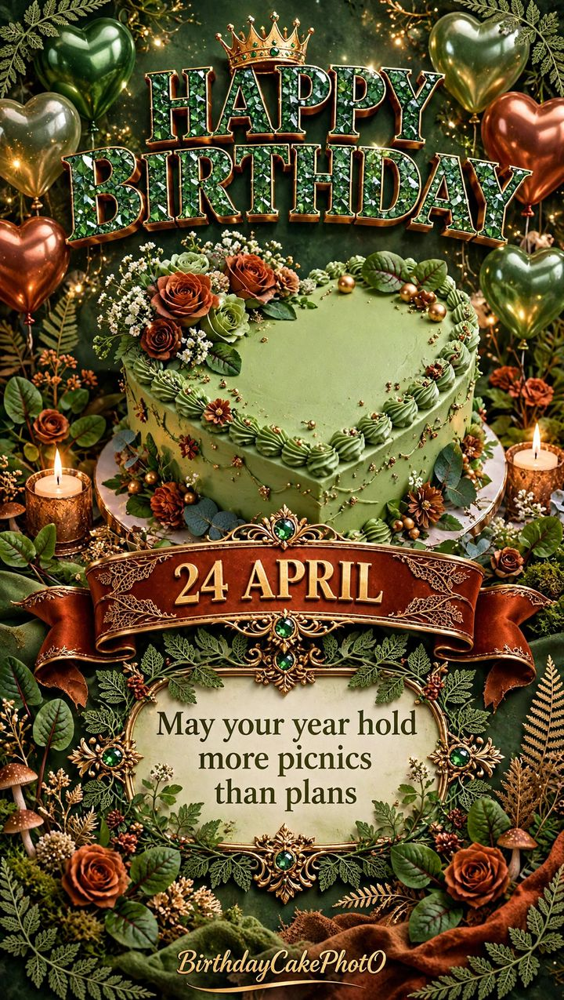

Find a free birthday photo for any day in April, from 1 to 30 April. Each date has its own design — download the photo for the birthday and share it with someone special.
Someone you love has an April birthday? Here you will find a free dated birthday photo for every single day of the month, from 1 April right through to 30 April. Each date has its own spring design, so the photo you send always matches the day. They are free to download and share, and you can find more birthday ideas on Birthday Cake PhotO.
15 April16 April17 April18 April19 April20 April21 April22 April23 April

24 April25 April26 April27 April28 April29 April30 April
Birthday wishes for April birthdays
Happy birthday! May your April birthday bring you soft spring rain, fresh green leaves, and a year that grows more beautiful with every passing day.
Wishing you a birthday as bright as an April morning, and a year full of blossoming plans, kind surprises, and friends who feel like sunshine.
Happy birthday! Here's to a year of open windows, birdsong at dawn, and all the little joys that April scatters along the way.
May your birthday be the sweetest day of April — and may the year ahead be gentle, generous, and full of new green shoots.
Wishing you a day of cake, candles, and laughter, and a year that unfolds like a spring garden, one lovely surprise at a time.
Happy birthday! May the longer April days bring you more time outdoors, more laughter with friends, and more reasons to smile.
Here's to you on your April birthday — may this year bring you fresh starts, warm showers of kindness, and dreams that bloom right on schedule.
Wishing you a birthday full of rain-washed mornings and golden afternoons, and a year as fresh as April itself.
Happy birthday! May this new year of your life be full of green leaves, gentle rain, and happiness that grows a little every day.
Here's to your April birthday — may the year ahead bring you happy wanderings, unexpected joys, and friends who make every day feel like spring.
How to share these birthday photos
Find the photo for the birthday date and save it to your device — long-press the photo on a phone, or right-click it on a computer and choose save. Then send it as a message or post it on WhatsApp, Facebook, or Messenger. The photos are free to share for personal use, so you can send one to as many April birthdays as you like.
Questions people ask
Are these birthday photos free to download and share?
Yes. Every April birthday photo on this page is free to download and share for personal use — no sign-up and no payment needed.
What dates in April are covered?
All of them. The gallery has one birthday photo for each day from 1 April to 30 April, so every April birthday is covered.
Can I share a photo on WhatsApp or Facebook?
Yes. Download the photo for the birthday date, then share it from your phone or computer on WhatsApp, Facebook, Messenger, or any app you use.
Do the photos show a year?
No. Each photo shows the date and month only, so the same photo works every year.